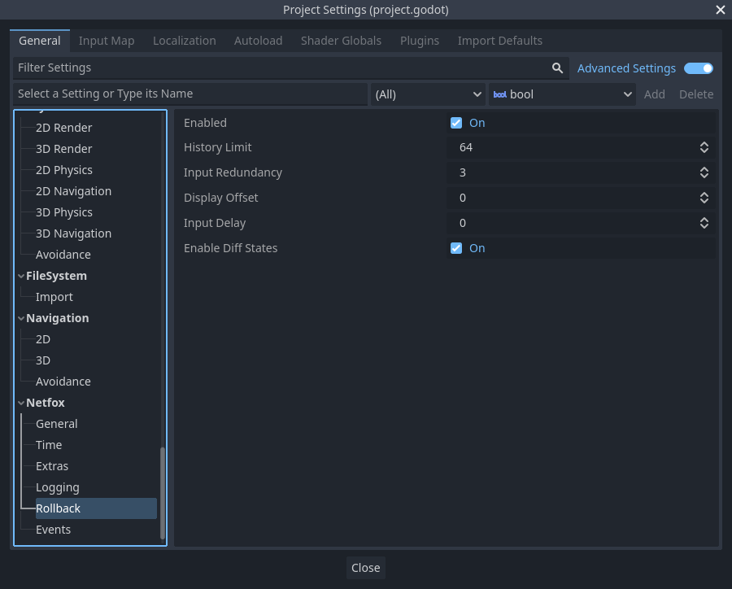

NetworkRollback
Orchestrates the network rollback loop. Provided as an autoload.
Due to latency, the server may receive inputs from clients from multiple ticks ago. Whenever this happens, the server rewinds its time and resimulates the whole game from the time of the new input. The resimulated ticks are then sent to clients to update their state.
Also due to latency, clients may receive a state from the server that is several ticks old. Clients rewind their simulation to the time of the latest received state and resimulate from there.
On both clients and servers, simulated states are recorded for reuse later.
Further reading: Client-Side Prediction and Server Reconciliation
Note that most of the time you do not need to use this class - the RollbackSynchronizer node helps with writing rollback-aware behaviour.
Network rollback loop
NetworkRollback runs the network rollback loop after every network tick, but before the after tick signal is fired.
The following is the network rollback loop in isolation:
Signal handlers must implement the right steps for rollback to work.
During before_loop, all rollback-aware nodes must submit where to start the
resimulation, by calling NetworkRollback.notify_resimulation_start.
Resimulation will begin from the earliest tick submitted.
In each on_prepare_tick(tick) handler, nodes must rewind their state to the
specified tick. If a state is not available for the given tick, use the latest
tick that is earlier than the given tick. Nodes may also register themselves as
being simulated by calling NetworkRollback.notify_simulated. This is not used
by NetworkRollback itself, but can be used by other nodes to check which
nodes are simulated in the current rollback tick.
Before processing, after_prepare_tick(tick) is emitted. This is where any additional state- or input preparation may happen, such as input prediction.
For the on_process_tick(tick) signal, nodes must advance their simulation by a single tick.
In on_record_tick(tick), nodes must record their state for the given tick. Note that since the simulation was advanced by one tick in the previous signal, the tick parameter is incremented here.
The after_loop signal notifies its subscribers that the resimulation is done. This can be used to change to the state that is appropriate for display.
The network rollback loop is part of the network tick loop as follows:
Conditional simulation
During rollback, NetworkRollback loops over the full range of ticks to resimulate. Some nodes may not need to be resimulated for the current tick, e.g. because they don't have input for the current tick.
NetworkRollback can be used to track nodes that will be simulated in the
current rollback tick. Register nodes that will be simulated by calling
NetworkRollback.notify_simulated. To check if a node has been registered,
call NetworkRollback.is_simulated.
Rollback-awareness
RollbackSynchronizer considers nodes rollback-aware that implement the
_rollback_tick method. Rollback-aware nodes are nodes that can participate in
the rollback process, i.e. they can resimulate earlier ticks.
To check if a node is rollback-aware, call NetworkRollback.is_rollback_aware.
To actually run a rollback tick on them, call
NetworkRollback.process_rollback.
These methods are called by RollbackSynchronizer under the hood.
Settings

Enabled toggles network rollback. No signals are fired when disabled.
History limit is the maximum number of recorded ticks to keep. Larger values enable further rewinds and thus larger latencies, but consume more memory for each node that is recorded.
Input redundancy This is the number of previous input ticks to send along with
the current tick. We send data unreliably over UDP for speed. In the event a packet is
lost or arrives out of order we add some redundancy. You can calculate your target
reliability % packet success chance by using the formula
1 - (1 - packet_success_rate) ^ input_redundancy.
Display offset specifies the age of the tick to display. By displaying an older state instead of the latest one, games can mask adjustments if a state update is received from the server. The drawback is that the game will have some latency built-in, as it reacts to player inputs with some delay. Setting to zero will always display the latest game state.
Input delay specifies the delay applied to player input, in ticks. This results in player inputs shifted into the future, e.g. if the player starts moving left on tick 37, it will be sent to the server as tick 39. This way, even if the input takes time to arrive, it will still be up to date, as long as the network latency is smaller than the input latency.
Warning
RollbackSynchronizer's is_fresh parameter may not work as expected with
input delay. This happens because clients already receive data for the
current tick, which means that the tick doesn't need to be resimulated, and
as a result, no _rollback_tick callbacks are ran with is_fresh set to
true.
This happens when network latency is smaller than the input delay.
Enable diff states toggles diff states. By sending only state properties that have changed, netfox can reduce the bandwidth needed to synchronize the game between peers. See RollbackSynchronizer on how this is done and configured.